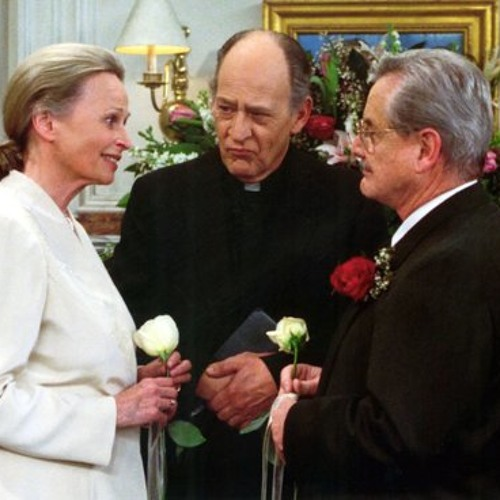
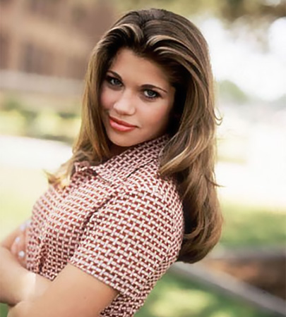
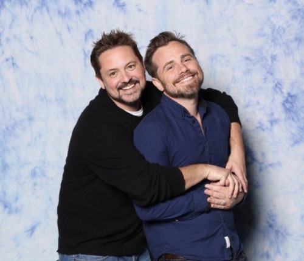
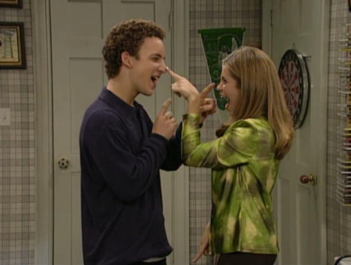

In one of the later episodes, it is revealed that Cory's full name is Cornelius A. Matthews
Cory and Topanga's awkward first kiss was actually Ben Savage's first ever kiss!

Mr. Feeny and Dean Bolander Are Married IRL.
They were married on the show as well.
In real life, William Daniels and Bonnie Bartlett were wed in 1951 and have two children.

Jacobs was driving along Topanga canyon when production called him up
to say that they needed a name for the female lead of the show.
He said Topanga (given his current setting) and the name stuck.
If production had called him a few minutes later, he would have said Canoga (which was the next highway exit).
Topanga Lawrence was originally a fringe character, to be used as a foil for the main characters,
but she was too popular for her own good and became one of the stars.
In an interview, Danielle Fishel revealed that she was not supposed to cry in her last scene,
but knowing that the show had ended, she broke down saying her lines, and they kept it in.

Rider Strong and Will Friedle are besties to this day.
Their friendship and chemistry was almost too strong however, and their scenes together were limited.
Why? They just couldn't stop laughing when trying to say their lines.
Hundreds of kids signed up to audition for producer Michael Jacobs, hoping to get the role of Shawn.
Strong was the first to audition, and Jacobs didn't see anyone else.
For more fun facts click on the image below.

Back to Top